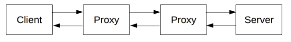

How does the internet work?
- The Internet is the backbone of the Web, the technical infrastructure that makes the Web possible. When two computers need to communicate, you have to link them, either physically (usually with an Ethernet cable) or wirelessly (for example with Wi-Fi or Bluetooth systems). each computer on a network is connected to a special tiny computer called a router.
- The router has only one job: like a signaler at a railway station, it makes sure that a message sent from a given computer arrives at the right destination computer. Once we add a router to the system, our network of 10 computers only requires 10 cables: a single plug for each computer and a router with 10 plugs.
- By connecting computers to routers, then routers to routers, we are able to scale infinitely.The telephone infrastructure already connects your house with anyone in the world so it is the perfect wire we need. To connect our network to the telephone infrastructure, we need a special piece of equipment called a modem.
- This modem turns the information from our network into information manageable by the telephone infrastructure and vice versa.
- The next step is to send the messages from our network to the network we want to reach. To do that, we will connect our network to an Internet Service Provider (ISP). An ISP is a company that manages some special routers that are all linked together and can also access other ISPs' routers. So the message from our network is carried through the network of ISP networks to the destination network.
A deeper dive
When two computers need to communicate, you have to link them, either physically (usually with an Ethernet cable) or wirelessly (for example with Wi-Fi or Bluetooth systems). All modern computers can sustain any of those connections.

Such a network is not limited to two computers. You can connect as many computers as you wish. But it gets complicated quickly. If you're trying to connect, say, ten computers, you need 45 cables, with nine plugs per computer!

To solve this problem, each computer on a network is connected to a special tiny computer called a router. This router has only one job: like a signaler at a railway station, it makes sure that a message sent from a given computer arrives at the right destination computer. To send a message to computer B, computer A must send the message to the router, which in turn forwards the message to computer B and makes sure the message is not delivered to computer C.
Once we add a router to the system, our network of 10 computers only requires 10 cables: a single plug for each computer and a router with 10 plugs.

A network of networks
So far so good. But what about connecting hundreds, thousands, billions of computers? Of course a single router can't scale that far, but, if you read carefully, we said that a router is a computer like any other, so what keeps us from connecting two routers together? Nothing, so let's do that.

By connecting computers to routers, then routers to routers, we are able to scale infinitely.

Such a network comes very close to what we call the Internet, but we're missing something. We built that network for our own purposes. There are other networks out there: your friends, your neighbors, anyone can have their own network of computers. But it's not really possible to set cables up between your house and the rest of the world, so how can you handle this? Well, there are already cables linked to your house, for example, electric power and telephone. The telephone infrastructure already connects your house with anyone in the world so it is the perfect wire we need. To connect our network to the telephone infrastructure, we need a special piece of equipment called a modem. This modem turns the information from our network into information manageable by the telephone infrastructure and vice versa.

So we are connected to the telephone infrastructure. The next step is to send the messages from our network to the network we want to reach. To do that, we will connect our network to an Internet Service Provider (ISP). An ISP is a company that manages some special routers that are all linked together and can also access other ISPs' routers. So the message from our network is carried through the network of ISP networks to the destination network. The Internet consists of this whole infrastructure of networks.

An overview of HTTP
- HTTP is a protocol for fetching resources such as HTML documents. It is the foundation of any data exchange on the Web and it is a client-server protocol, which means requests are initiated by the recipient, usually the Web browser. A complete document is reconstructed from the different sub-documents fetched, for instance, text, layout description, images, videos, scripts, and more. Clients and servers communicate by exchanging individual messages. The messages sent by the client, usually a Web browser, are called requests and the messages sent by the server as an answer are called responses.
- HTTP is an extensible protocol which has evolved over time. It is an application layer protocol that is sent over TCP, or over a TLS-encrypted TCP connection.
Components of HTTP based systems
- HTTP is a client-server protocol: requests are sent by one entity, the user-agent. Most of the time the user-agent is a Web browser, but it can be anything, for example, a robot that crawls the Web to populate and maintain a search engine index.
- Each individual request is sent to a server, which handles it and provides an answer called the response. Between the client and the server there are numerous entities, collectively called proxies, which perform different operations and act as gateways or caches, for example.

URI vs URL.What's the difference?
URI
- A URI “Uniform Resource Identifier” is a sequence of characters that distinguishes one resource from another.
For example, foo://example.com:8042/over/there?name=ferret#nose is a URI containing a scheme name, authority, path, query and fragment. A URI does not need to contain all these components. All it needs is a scheme name and a file path, which can be empty.
- There are two types of URIs: URNs and URLs. A Uniform Resource Name (URN) is a persistent and location-independent identifier that follows the “urn” scheme. In this context, “persistent” means that the URN persists in identifying the same resource over time.
URL
- A URL “Uniform Resource Locator” is a specific type of identifier that not only identifies the resource but tells you how to access it or where it’s located. For example, a URL might contain ftp:// or https://. This tells you that the resource can be located and accessed via File Transfer Protocol (FTP) or Hypertext Transfer Protocol Secure (HTTPS).
- a URL contains unique components, such as protocol and domain, as well. In the last URL example, “https://” is the protocol. “Offers” is the subdomain, and “hubspot.com” the domain name. “How-to-run-seo-audit” is the path, and the question mark and everything after makes up the query.
Difference between URI and URL
- The key difference between URIs and URLs is that URIs are identifiers, whereas URLs are locators. In other words, a URI simply identifies the resource. It does not describe or imply how to locate the resource.
- The most common analogy used to understand the difference between URIs and URLs is comparing a person’s name vs. their address.
- The other major difference is that URIs can be used to identify and differentiate HTML, XML, and other files from each other. URLs, on the other hand, can only be used to identify and locate web pages.